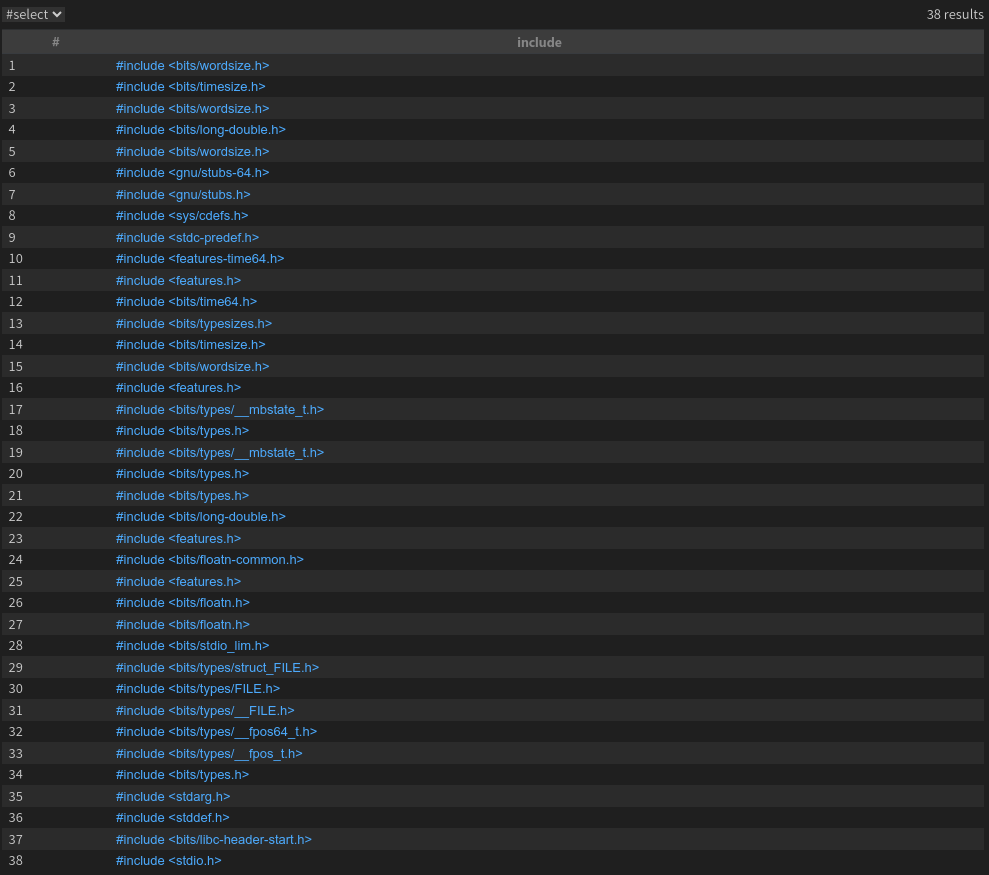
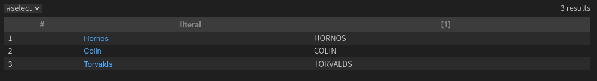

最近接触了一些漏洞挖掘比赛，在大神的引导下接触了CodeQL，这个常用的代码审计工具。与其他代码审计工具不同，它自己定义了一种语言，用于获取代码审计结果，这也使得该工具具有一定的学习成本。下面，我们就来学习一下该工具的使用。
实际上，我们可以将CodeQL语言看成Java语言与SQL语言的结合。CodeQL需要获取一个工程的构建命令，并在工程构建之时构建整个工程代码的抽象语法树（AST）。这个AST可以看做一个数据库，其中包含了工程中的所有代码逻辑，而CodeQL语言则可以对数据库进行筛选与查找，以完成对代码特定部分的审计。如我们需要获取工程中使用了哪些加密算法，工程中是否存在某种特定漏洞，都可以使用CodeQL语言定义匹配模式。
下面，我们就通过实例与代码结合的方式对CodeQL的语法进行学习。
A. 环境搭建与基础操作
A.1 CodeQL环境安装
VSCode对CodeQL的支持较好，这里选择以VSCode为基础搭建环境。
系统环境：Linux Mint
我们需要下载两个东西，一个是CodeQL-cli，用于编译CodeQL规则，是闭源的。第二个是第三方仓库，其中定义了很多实用的CodeQL类，后面会用到。
1 | wget https://github.com/github/codeql-cli-binaries/releases/download/v2.17.6/codeql-linux64.zip |
这里的第二条命令可能会执行失败，这可能是因为该仓库较大，可以尝试使用下面的命令完成clone：
1 | git clone https://github.com/Semmle/ql --depth 1 |
随后，将第一个闭源的文件解压后的目录加入PATH中，使用source命令更新后，即可使用codeql命令。但实际上我们基本不需要在命令行中使用该命令，而是多在VSCode中完成相关配置。
A.2 创建数据库
下面是使用codeql命令创建工程数据库的命令：
1 | codeql database create <database_dir> --language="<lang>" --command="<build_command>" --source-root=<source_root> |
其中database_dir即为数据库的目录，lang为需要审计的语言，build_command为构建命令，source_root为工程的根目录。这里目录与命令中的目录最好使用绝对路径。
A.3 VSCode插件
在VSCode插件界面中，搜索CodeQL后安装。
随后打开 “首选项 > 设置”，搜索CodeQL，修改 “Code QL > Cli: Executable Path” 为codeql可执行文件的路径。即完成了CodeQL插件的配置。
B. CodeQL 语法
B.1 基本查询
一个CodeQL脚本执行后，最终应该输出一个表格，其中保存有所有匹配该脚本中定义的模式的工程代码元素。
首先，我们以一个demo工程作为示例。该工程中只有1个main.c文件：
1 |
|
使用上面的数据库生成命令为该工程生成一个数据库，构建命令为gcc main.c -o test。当最后输出Successfully created database at …时，即完成了数据库构建。
随后，我们需要在指定目录下编写CodeQL脚本，否则CodeQL将无法找到实用类。对于C/C++文件，应该在第三方仓库根目录下 /cpp/ql/examples 进行编写。
Example 01
1 | import cpp |
上面是一个简单的CodeQL脚本，用于获取工程中包含的所有头文件。这里的头文件是递归获取的。
import cpp：导入cpp，这是一个qll文件，位于/cpp/ql/examples/lib中，包含了很多实用的cpp模块。from Include include：定义筛选对象，这里的Include是一个类，其中定义了与C/C++头文件有关的属性等，include为对象名。select include：选择所有数据库中的Include对象并输出。
编写完上面的脚本后，直接点击右上角的启动即可开始运行脚本。运行结果如下图所示。

实际上，这里的输出是调用了Include类中的toString方法。
1 | // ql/cpp/ql/lib/semmle/code/cpp/include.qll, line 19 |
考虑到不同语言的语法结构可能有很大不同，因此对于不同的语言，第三方仓库中定义有不同的工具类，因此需要进行某种语言的审计时，最好先对该语言定义的一些模块与类进行了解。
B.2 条件查询
如果需要在查询语句中添加一些限制条件，可以在from之后，select之前添加限制条件。
Example 02
1 | import cpp |
在上面的脚本中，Literal为字符串字面量类，如果没有where语句，则将获取所有的字符串字面量。这里where语句限制只选择长度不小于4的字符串字面量。最终输出结果就是我们所定义的4个字符串。
注意：CodeQL的字符串类属于内置数据类型，相关方法与Java基本相同，方法名都一样。CodeQL的内置数据类型有：boolean、float、int、string、date。另外单等于号既可以表示等于又可以表示赋值，放在条件判断中表示等于，其他则表示赋值。
B.3 predicate谓词
当条件查询中的条件较为复杂时，可以通过使用predicate谓词将条件进行包装，这样可以提升脚本文件的模块化水平与可读性。
如上面的Example 02可以改成相同语义的下面这个脚本：
Example 03
1 | import cpp |
predicate关键字可以看做定义返回布尔类型的函数。在函数体内部，默认以最后一条语句的结果作为返回值。
B.4 函数定义
CodeQL的函数定义与Java类似，不同的是，CodeQL以内部变量result作为返回值，不使用return关键字。
Example 04
1 | import cpp |
需要注意的是，由于CodeQL不是专用于常规代码逻辑的语言，因此CodeQL基本没有实现代码的流程控制，在关键字中不存在通用编程语言中常见的while、for等。因此在脚本中，函数实际上也是predicate谓词的一种形式。在Example 03中，定义的谓词没有result作为返回值，因此被称为无返回值谓词。而在Example 04中，定义了一个返回值为string的谓词，称为有返回值谓词。需要注意的是，有返回值谓词不一定只能返回某个值，它还能附加上一些限制条件，如这里的and literal.toString().length() >= 5就对传入的参数进行了限制。
无返回值谓词只能放在where关键字之后，而有返回值谓词可以放在where和select之后，均在作为返回值类型使用的同时针对内部限制条件进行筛选；如这里的长度限制就会筛选掉一个长度为4的字符串Alex，输出结果如下。

可以看到，输出中最后一列的列名为[1]。如果需要修改这里，可以在long_string_upper(literal)后面添加as ...指定列名。
B.5 类定义与类继承
CodeQL还可以定义类，类可以定义继承关系。
在类中可定义同名谓词，即直接以类名作为谓词使用。
Example 05
1 | import cpp |
上面的例子是谓词的第三种写法，即包装在类内部。对于CodeQL中的类继承关系，可以理解为：子类是满足某些条件的父类的子集，这里的“某些条件”定义在子类的构造函数中。如这里即定义了Literal的子类，要求字面量长度不小于4。
注意：下面的写法是错误的：
Example 06 (WRONG)
1 | import cpp |
报错发生于EnoughLength构造函数中：The characteristic predicate for ‘test::EnoughLength’ does not bind ‘this’ to a value.
这个报错刚出现时，我非常困惑，询问了多个GPT也没有获得满意的结果。折腾了好一阵子之后，最终还是在CodeQL官方文档中找到了答案（还是要多看文档啊）：CodeQL在处理谓词时需要确保处理对象是一个有限集，这样才能够在有限时间内完成处理。对于上面的例子，由于string字符串类型是一个无限集，其长度可以为任意长度，因此CodeQL无法处理。相同的报错也会发生在尝试继承int、double等其他基本类型中，虽然int和double实际上在计算机中表示时本质上是有限集，但在数学上是无限集，因此当做无限集看待。
有一种情况例外：
Example 07
1 | class EnoughLength extends string { |
在这个示例中，this已经被明确为一个指定集合，子类的范围已经明确，不需要确定父类范围。这种写法是正确的。
那么，如果非要针对无限集定义predicate，应该如何处理呢？答案是——注解bindingset[]。这是一种annotation注解，可以将谓词中的参数显式绑定到有限集，只需要添加一行代码，就可以让example 06通过编译：
Example 08
1 | import cpp |
在上例中，我们通过bindingset注解将类自身绑定到有限集中，这个有限集取决于使用该类的代码。如这里是literal.toString()，即相当于将类EnoughLength首先绑定到由所有literal调用toString()方法获取的有限集中。这样实际处理的就不是无限集了。
需要注意的是，在文档中提到，bindingset可以针对多个参数使用，有两种书写形式：
1 | bindingset[x] bindingset[y] |
对于第一种，它的含义是：只需要x和y的其中之一被绑定，则认定x与y均被绑定（两个绑定的指定相互独立）。对于一个有两个参数的谓词，如果只指定x绑定，则含义为：当x被绑定时，认为x和y都被绑定。
而对于第二种，它的含义是：x与y必须都被绑定。这种书写形式多用于带返回值的谓词中。
Example 09
1 | bindingset[x] bindingset[y] |
上例为CodeQL文档中的一个示例。这个示例是正确的。将bindingset[x]删除后依然正确，但删除bindingset[y]则错误。原因是where限制条件中只限制了y到一个有限集{42}，却没有限制x。CodeQL在这种情况下能够求出x的值（41）并输出。
B.6 模块
除了类之外，CodeQL还有更加高层次的一个代码结构——模块。根据CodeQL文档，模块分为几种：
- 文件模块：每个ql与qll后缀的文件都会隐式生成一个模块。
- 库模块：qll文件的模块。
- 查询模块：ql文件的模块。
- 显式模块：使用module关键字显式声明的模块。
- 参数化模块：除了使用module显式声明外，还使用
<>指定谓词参数的模块，相当于带有谓词泛型的模块。
- 参数化模块：除了使用module显式声明外，还使用
Example 10
1 | import cpp |
如上例所示，在模块中，可以定义类、谓词等，需要使用模块时，需要首先进行导入，即使该模块在当前文件中定义也需要导入。instanceof关键字的作用于Java中类似，用于判断前者是否在后者范围内。
Example 11
1 | import cpp |
上例展示了带有谓词参数的模块定义与实例化。MyModuleTemplate是我们定义的模块泛型，包含1个泛型谓词limit，谓词格式为mysig格式。这是一个谓词signature签名，在CodeQL中，signature可用于指定谓词类型，如这里的signature调用即定义了一个谓词格式，它具有1个int类型的参数、没有返回值、且参数被绑定。在泛型模块定义时，需要指定每个泛型谓词的参数个数，即mysig后面的/1，表示该泛型谓词有1个参数。在泛型模块之内，可以直接调用模块谓词。关于signature关键字的使用在后面将详细说明。
由于泛型模块内存在未确定的谓词，因此需要使用泛型模块前，首先需要指定泛型类型以将其实例化。这里的MyModule即为模块泛型MyModuleTemplate的实例化结果，它使用morethan3这个谓词作为泛型参数传递。
B.7 模块实现
在CodeQL中，可以使用signature关键字定义一个模块签名，可以看做是一个模块接口，其他模块可以通过使用implements接口实现该模块。一旦要实现某个模块，必须在该模块中实现模块签名中除使用default修饰的所有内容，包括数据类型、类、谓词等。
Example 12
1 | import cpp |
在上例中，我们定义了一个模块签名MyModuleTemplate，其中定义了一个谓词，在模块签名中的谓词不需要使用signature，会默认将其看做谓词签名。下面还定义了一个default修饰的谓词，这个谓词可以选择不实现，这样实例化模块中会直接使用该谓词。
B.8 聚合表达式
聚合表达式（Aggregates）是CodeQL中内置定义的用于进行集合操作的一系列实用的类似于函数调用的表达式。格式为：
<aggregate>(<variable declarations> | <formula> | <expression>)
调用内部有3个部分，通过2个|隔开，和for循环的格式差不多。
聚合表达式有以下几种：
- count：计数，满足formula条件的expression的数量。如
count(File f | f.getTotalNumberOfLines() > 500 | f)为获取行数大于500的文件数量。 - min/max：获取满足formula条件的expression的最小/最大值。表达式必须为数值类型或string类型（按照字母排序），或定义了
order by排序方式。如max(File f | f.getExtension() = "js" | f.getBaseName() order by f.getTotalNumberOfLines(), f.getNumberOfLinesOfCode())即获取所有后缀为js的文件，在按照行数大小排序的情况下获取函数最大的文件名与该文件的代码行数。 - avg：获取满足formula条件的expression的平均值，表达式必须为数值类型。
- sum：获取满足formula条件的expression的和，表达式必须为数值类型。
- concat：获取满足formula条件的所有expression的拼接，表达式必须为string类型，在expression中可使用order by确定拼接的顺序，如
order by ... desc即为从大到小排序。如果要在相邻expression中添加分隔字符串，则可在expression后面添加分隔符字符串，并使用逗号隔开。 - rank：获取满足formula条件的所有expression，排序后获取其中的第几个值。表达式必须为数值类型或string类型（按照字母排序），或定义
order by排序方式。如rank[4](int i | i = [5 .. 15] | i)即为获取[5 .. 15]中第4大的值。注意前面的排位从1开始。 - strictconcat/strictcount/strictsum：与concat/count/sum基本相同，不同的是当没有满足formula条件的表达式存在时，会返回空集，而不是一个默认值。
- unique：获取可满足formula条件，且仅有一个取值满足formula条件的expression集合。如下例返回
[1 .. 5]，因为对于负数，y有两个可取的值。 - any：这个严格来说不是聚合表达式，它返回的是列表，用于获取所有同一类型的元素，或者对所有同一类型元素进行相同处理后产生的列表。如
any(int i | i = [0 .. 3] | i * i)返回[0, 1, 4, 9]
Example 13
1 | from int x |
以下几种情况可以进行省略：
- 对于
<aggregate>(<type> v | <expression> = v | v)格式，可以简写为<aggregate>(<expression>)。 - 当表达式中只有变量时，可以省略最后的表达式。如
avg(int i | i = [0 .. 3] | i)可省去最后的i。 - 对于
count，如果条件本身已经完成了筛选，可以省去后面的表达式。 - 如果没有formula条件，可以省去，但
|不能省略。 - 条件和表达式可以同时省略，如
count(File f)。
在CodeQL中，除了上面的聚合外，还可以添加注解language[monotonicAggregates]设置聚合为单调聚合。单调聚合与标准聚合的差别在于处理非一对一关系上。对于标准聚合，如果一个输入有多个值满足条件，则会将多个值扁平化处理，全部放入最终的输出列表中，最后完成对该列表的聚合操作。而对于单调聚合，则会将多个值拆分为多个列表输出。
下面是CodeQL文档中的一个示例：
Example 14
1 | string getPerson() { result = "Alice" or |
输出结果：
1 | variant person cost |
首先是default情况，注意到getPrice中Orange有两个Price，因此在nonmono中，将p的两个取值Orange和Apple输入到sum中能够获取两个列表：[100], [100, 1]，前者是Apple对应的Price，后者是Orange对应的Price。求和时则是将两个列表扁平化，将其中的所有元素放到一个列表中求和，也就是201。但对于单调聚合，则是考虑将[100], [100, 1]拆分为[100, 100], [100, 1]分别求和，最终输出2行结果。同样地，对于Charles，在标准聚合中获得的Price列表为[100], []，求和为100，但在单调聚合中，由于出现了空集，因此最后不应有任何输出结果。换句话说，单调聚合会对不同输入获取的多个列表取笛卡尔积，最终可能输出多行。
B.9 一些运算符号与逻辑表达式
CodeQL定义了一些逻辑表达式，在数学证明中我们可能经常会看到：
exists(<variable declarations> | <formula>)：如存在符合formula条件的值，则该表达式为真。也可以写作exists(<variable declarations> | <formula 1> | <formula 2>)，等同于需要同时满足两个条件。forall(<variable declarations> | <formula 1> | <formula 2>)：对于所有满足formula 1的值，如果全部满足formula 2，则该表达式为真。forex(<variable declarations> | <formula 1> | <formula 2>)：这是exists和forall的求与结果。它避免了forall中不存在值满足formula 1时返回真的情况，要求必须存在满足formula 1的元素才有可能使最终结果为真。
在CodeQL中，只定义了if-else而没有定义循环语句，严格来说是if-then-else语句。在判断条件中，除了基本的and、not、or外，还有内置的any()表示某个类型的全集、none()表示空集，以及implies关键字“蕴含”，A implies B等同于(not A) or B，在离散数学的数理逻辑中提到了这个逻辑运算。
在CodeQL中，可以在元素与集合之间使用比较符号，只要集合中有一个元素与要比较的元素成立比较条件，那么该表达式就成立。如1 != [1 .. 2]成立，因为1 != 2。也可以在集合与集合之间使用比较符号，但需要注意与not的结合：对于集合A和B，A != B与not A = B的区别在于：A != B的含义是∃a∈A，∃b∈B，a!=b，而not A = B的含义是~(∃a∈A，∃b∈B，a=b)，即∀a∈A，∀b∈B，a!=b。
B.10 注解
Annotations注解是CodeQL中画龙点睛的一个语言特性，大大扩展了CodeQL。其中一些已经在上文中提到。
private：可用于模块前，表示模块为私有模块，但可以通过指定别名访问别名的方式访问该私有模块。如果用于模块内的类、谓词前，则默认只有模块中的其他类与谓词可以访问该私有类或谓词，同样也可以通过在模块中定义别名的方式在外部访问该私有类或谓词。abstract：用于类前表示该类为抽象类，用于谓词前表示该谓词为抽象谓词，抽象谓词没有内容，参数后直接跟分号。对于类中的抽象谓词，继承该类时必须使用override进行重载。cached：可用于标记类、谓词、模块，会将相关输出结果进行缓存，以提升查询速度。deprecated：标记已弃用。external：仅用于非类成员的谓词中，用于定义一个外部的谓词模板。transient：仅用于被标记为external的谓词中，表示该谓词操作不应该被缓存。final：可用于标记类、类型别名、类成员谓词、类成员属性，用于标记不可被重载的谓词、不可被继承的类、不可被用作定义其他别名的类型query：用于标记非类成员谓词、别名，用于在QL查询脚本中标记该谓词为一个查询，将输出该谓词查询的结果。pragma[inline]：提示编译器永远将类构造谓词、类成员谓词、非类成员谓词标记为内联，在编译时直接展开。pragma[noinline]：pragma[inline]的反义。
B.11 递归
CodeQL中虽然没有实现循环，但可以通过递归操作完成循环逻辑。
下面是CodeQL文档中的示例，可用于递归获取0到100的整数集合：
1 | int getANumber() { |
经过多次尝试，我大概理解了CodeQL处理递归的逻辑：
- 首先将不需要递归的分支进行计算，获取值后保存到最终的输出列表中。
- 再处理需要递归的分支，将输出列表中的值一个个带入到递归谓词中，计算出新的值并保存到输出列表中。
- 如此重复直到最终输出列表不再扩充新值，返回。
除了自己递归自己之外，CodeQL还允许多个函数循环递归，如A -> B -> A -> B。
为了简化递归写法，CodeQL使用了+和*。对于一个谓词A，A+()表示递归执行A至少1次，A*()表示递归执行A至少0次。这应该是借用了编译原理词法分析中的符号表示，在实际含义上也类似于编译原理中的闭包。因此为了方便理解，我们就可以认为CodeQL的递归实际上是创建了一个闭包。
当然，这样的递归在使用时需要格外注意。如下面的递归明显就是不允许的：
1 | predicate isParadox(){ |
即一个谓词不能递归调用自身的否定，这在循环递归中同样也不允许。